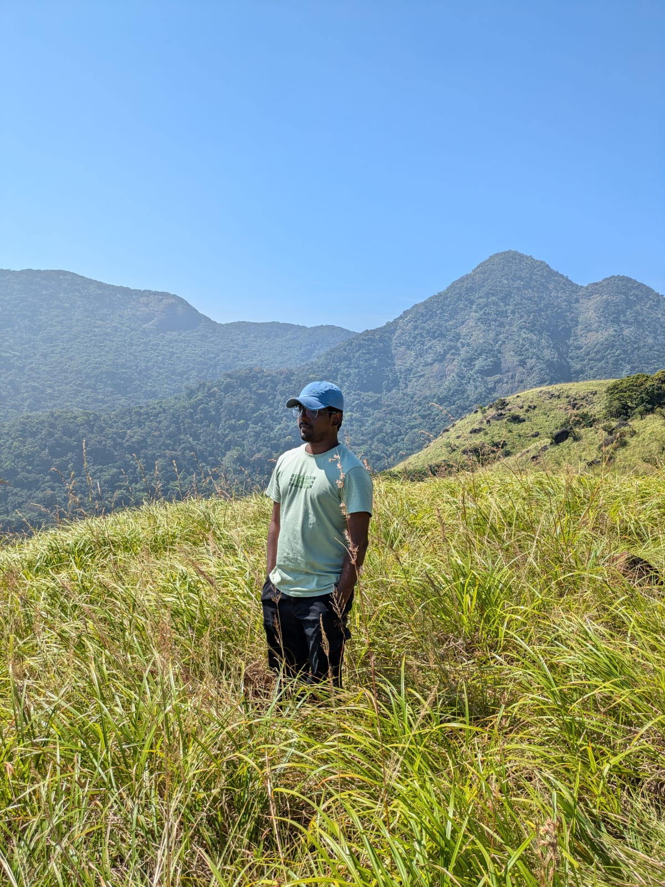

PhD Candidate · Astronomical Instrumentation & Exoplanet Spectroscopy
Indian Institute of Astrophysics, Bengaluru
Hi there! 👋
My academic journey began in Mechanical Engineering, but my interests gradually moved towards physics and astronomy. This path eventually brought me to the Indian Institute of Astrophysics (IIA), where I joined the Integrated M.Tech–PhD program in Astronomical Instrumentation, and am currently pursuing my PhD.
My research focuses on ground-based low- and high-resolution transmission spectroscopy of exoplanet atmospheres, with an emphasis on correcting stellar and instrumental systematics in observational data. I am also interested in the design and simulation of astronomical instrumentation, including ray-tracing–based instrument design and fiber positioners for multi-object spectroscopy.